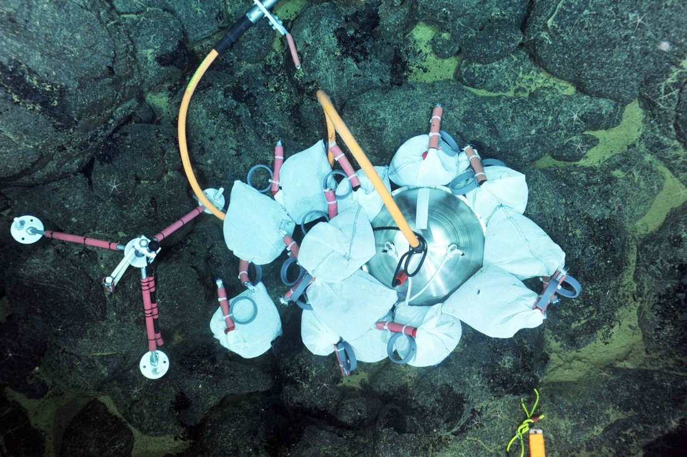
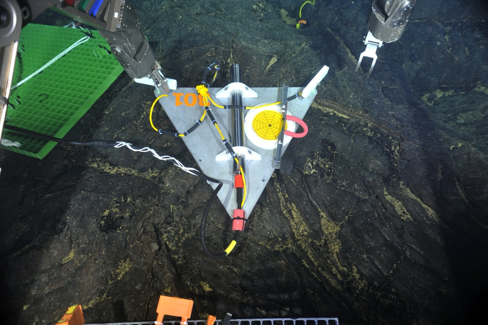
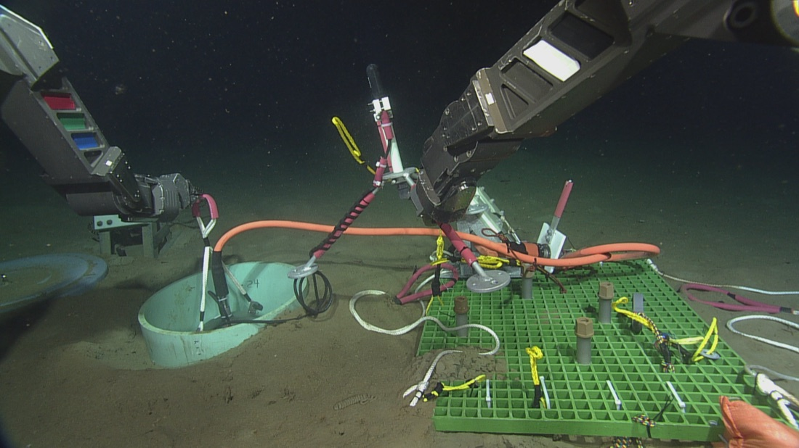
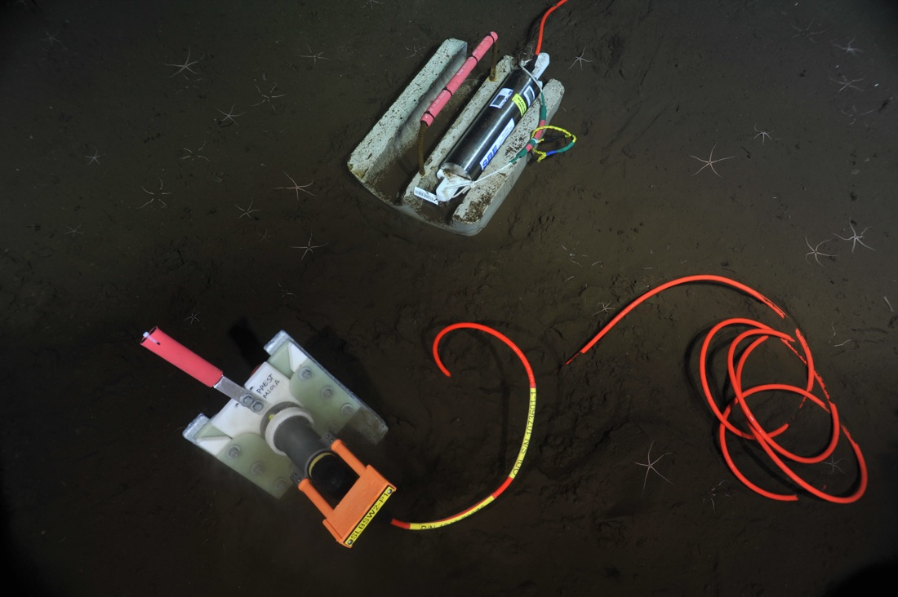
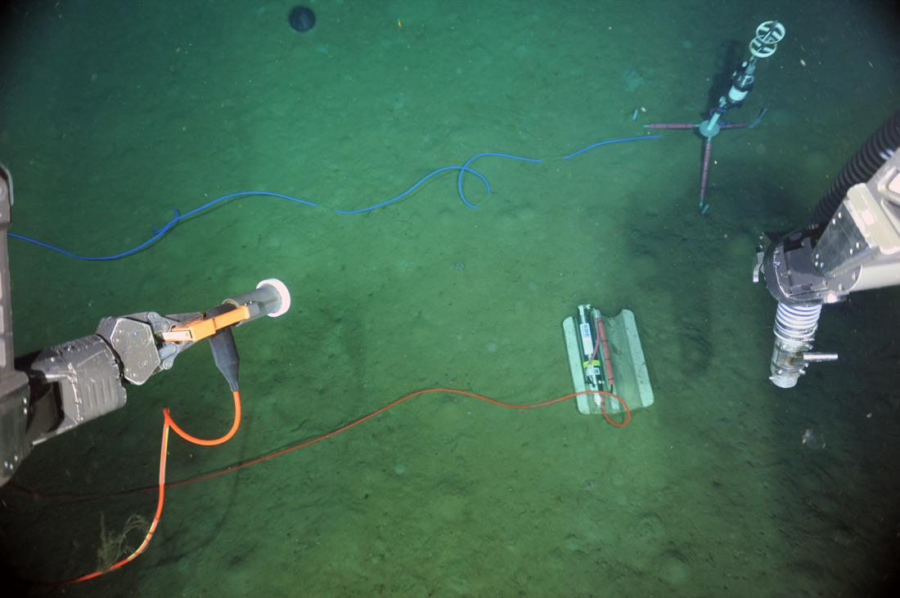

The RCA instruments that COSZO builds upon. These are the seismometers, pressure gauges, and oceanographic sensors already deployed and returning real-time data.
Since 2015, the OOI Regional Cabled Array has delivered real-time data from a suite of seafloor instruments along the Cascadia margin. These existing instruments — listed below with their makes, models, and the sites where COSZO uses them — are the foundation COSZO extends. Each links to its OOI instrument page for full specifications.
Broadband seismometers measure seismicity and earthquake activity along tectonic plate boundaries — from large-magnitude subduction-zone earthquakes to smaller events associated with faulting, melt migration, and hydrothermal upflow. Each instrument sits in a titanium housing; in sediment-covered areas it is set in a 60 cm caisson filled with silica beads to improve seafloor coupling and data resolution. The cabled connection enables real-time earthquake detection along the Oregon margin.
Sites: Slope Base, Southern Hydrate Ridge.

Short-period ocean-bottom seismometers detect the seismic vibrations of small earthquakes as energy travels through the seafloor, across a frequency range from roughly 0.1 Hz to 100 Hz. Three units monitor the Southern Hydrate Ridge summit, a methane-seep site offshore Newport, Oregon, helping resolve local subsurface processes. All instruments transmit real-time data and are publicly available.
Sites: Southern Hydrate Ridge (three units).

Low-frequency hydrophones detect the hydroacoustic tertiary (T) phase of oceanic earthquakes as well as solid-earth P waves from regional and teleseismic events. Working alongside the ocean-bottom seismometers, they enhance real-time offshore earthquake detection and improve magnitude and location accuracy. During the April 2015 Axial Seamount eruption, the hydrophones recorded over 30,000 water-borne acoustic events.
Sites: Slope Base, Southern Hydrate Ridge.

Sea-Bird SBE 54 sensors record absolute seafloor pressure in real time. Pressure is sensitive to lunar tides, storms, and currents, which can drive fluid migration into and out of seafloor crust and sediments; the same instruments can also measure the passing of tsunamis in real time.
Sites: Slope Base, Southern Hydrate Ridge (also Axial Base).

Single-point current meters measure the speed and direction of local currents along with water temperature. The measurements are key to understanding how heat, mass, and momentum are transported and how seawater mixes at small scales, and they also help filter current-driven acoustic noise from the seismic signals along the steep Cascadia bathymetry.
Sites: Slope Base, Southern Hydrate Ridge, Oregon Shelf, Oregon Offshore.
